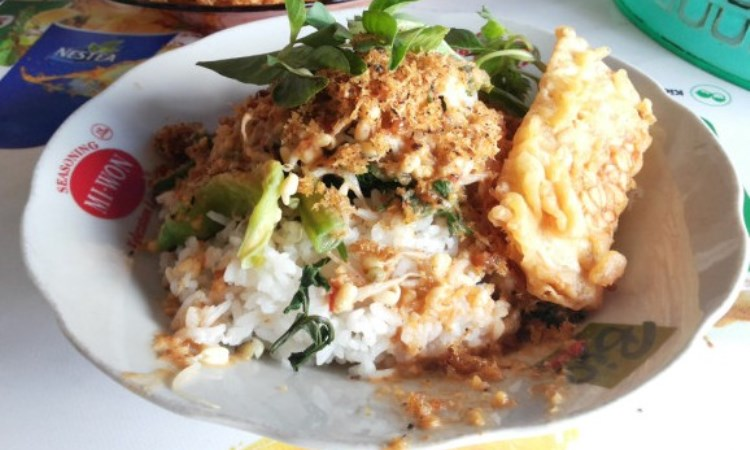

Pecel Khas Blitar

Pecel is one of the easies food that you will find in Indonesia. But, ofcourse, Pecel Blitar is one of the most reccomended food for you to try in Blitar. Even if it looks like a normal Pecel that you find everywhere else, ofcourse the taste will be slightly different.
Pecel Blitar taste better and is a little bit less sweet than the normal one. The peanuts are crushed softer so it will create a softer texture when you eat it. This pecel usually accompanied by peyek to make the taste even better. This food can be found almost anywhere in Blitar, with a relatively cheap price.